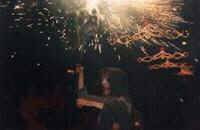

|
|
Des
dels seus origens l'home ha diferenciat entre aquelles coses que li
proporcionen un benefici (els fruits de la terra, els rius, el Sol...)
i aquelles que li causen una desgràcia (desastres naturals principalment).
No és, doncs, d'extranyar que quan va arribar el cristianisme amb la
seva dualitat entre el Bé i el Mal associés les primeres
amb Déu i la seva Cort Celestial d'àngels mentre que les segones les
atribuí al personatge maligne, a Satanàs i els seus dimonis. Així quedava
oberta la lluita entre el "Bé" i el "Mal", entre
els àngels i els dimonis.
La primera referència d'una actuació d'un grup de dimonis data del 1.150 a Barcelona, durant el banquet de noces entre Ramon Berenguer IV i Peronella d'Aragó on es relata una lluita entre Llucifer i els seus dimonis contra Sant Miquel i un seguit d'àngels. La segona referència no apareix fins el 1.423, també a Barcelona, celebrant el retorn del comte-rei Alfons IV el Magnànim. A partir d'aquí les referències van augmentant associant-se les actuacions de diables i àngels a les processons de Corpus (deixaven així de ser un simple entremès de banquet a tenir protagonisme propi) de Barcelona, Cervera, El Vendrell, Igualada, Tarragona, on consta la primera referència a l'us de la pirotècnia el 1.437. La seva actuació començà a consistir en obrir pas a la comitiva i, en acabada aquesta, representar la lluita entre el "Bé" i el "Mal" en el que s'anomenava un Ball Parlat. |
Al segle passat apareixen colles organitzades al Penedès-Garraf (Vilafranca,
Sitges, Sant Quintí de Mediona ...) al Camp de Tarragona (Tarragona,
Reus, Les Borges del Camp ...) i al Priorat (Falset ...). Aquestes colles
feien un Ball Parlat on Els Diables llegien els versots satírics, criticant
la vida del Poble i incitant a la festa i la decadència moral i escampant
espurnes de foc amb un bastó anometat "maça". Lògicament l'àngel
Sant Miquel acabava vencent les forces del mal i fent prevaldre les
virtuts morals. Aquestes colles, amb els seus alts i baixos i aparicions
i desaparicons, han arribat fins els nostres dies.
A partir dels anys vuitanta del nostre segle i degut a la aparició de colles de diables foranes a la Festa Major de la Ciutat de Barcelona, començà un "boom" de les colles a la ciutat i al seu entorn, que s'ha anat escampant per quasi tota la geografia del País. Aquestes noves colles no sempre fan el Ball Parlat i disfruten cremant amb el seu foc al públic que voluntàriament es posa sota les seves espurnes. És el que anomenem un Correfoc. Una Colla de Diables, doncs, és un grup de gent que, adienment vestida i amb un bastó (maça) llença un paraigües d'espurnes de foc al seu voltant, ja sigui com a simple passeig (Cercavil.la de Foc) o socarrimant aquells que es posen pel mig (Correfoc). Entremig i al final dels recorreguts tots els Diables dolen cremar alhora en el que s'anomena una "carretillada". Algunes Colles fan el Ball Parlat. Altres un petit espectacle pirotècnic. Altres, les dues coses. |
|
|  | ||||